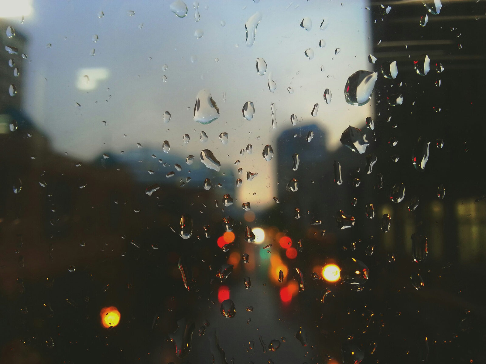

Yet Another Weather Webapp
A Dubizzle Test
Now this doubloon was of purest, virgin gold, raked somewhere out of the heart of gorgeous hills, whence, east and west, over golden sands, the head-waters of many a Pactolus flows. And though now nailed amidst all the rustiness of iron bolts and the verdigris of copper spikes, yet, untouchable and immaculate to any foulness, it still preserved its Quito glow. Nor, though placed amongst a ruthless crew and every hour passed by ruthless hands, and through the livelong nights shrouded with thick darkness which might cover any pilfering approach, nevertheless every sunrise found the doubloon where the sunset left it last. For it was set apart and sanctified to one awe-striking end; and however wanton in their sailor ways, one and all, the mariners revered it as the white whale's talisman. Sometimes they talked it over in the weary watch by night, wondering whose it was to be at last, and whether he would ever live to spend it.
Now those noble golden coins of South America are as medals of the sun and tropic token-pieces. Here palms, alpacas, and volcanoes; sun's disks and stars; ecliptics, horns-of-plenty, and rich banners waving, are in luxuriant profusion stamped; so that the precious gold seems almost to derive an added preciousness and enhancing glories, by passing through those fancy mints, so Spanishly poetic.
It so chanced that the doubloon of the Pequod was a most wealthy example of these things. On its round border it bore the letters, REPUBLICA DEL ECUADOR: QUITO. So this bright coin came from a country planted in the middle of the world, and beneath the great equator, and named after it; and it had been cast midway up the Andes, in the unwaning clime that knows no autumn. Zoned by those letters you saw the likeness of three Andes' summits; from one a flame; a tower on another; on the third a crowing cock; while arching over all was a segment of the partitioned zodiac, the signs all marked with their usual cabalistics, and the keystone sun entering the equinoctial point at Libra.
Before this equatorial coin, Ahab, not unobserved by others, was now pausing.
"There's something ever egotistical in mountain-tops and towers, and all other grand and lofty things; look here,—three peaks as proud as Lucifer. The firm tower, that is Ahab; the volcano, that is Ahab; the courageous, the undaunted, and victorious fowl, that, too, is Ahab; all are Ahab; and this round gold is but the image of the rounder globe, which, like a magician's glass, to each and every man in turn but mirrors back his own mysterious self. Great pains, small gains for those who ask the world to solve them; it cannot solve itself. Methinks now this coined sun wears a ruddy face; but see! aye, he enters the sign of storms, the equinox! and but six months before he wheeled out of a former equinox at Aries! From storm to storm! So be it, then. Born in throes, 't is fit that man should live in pains and die in pangs! So be it, then! Here's stout stuff for woe to work on. So be it, then."
"No fairy fingers can have pressed the gold, but devil's claws must have left their mouldings there since yesterday," murmured Starbuck to himself, leaning against the bulwarks. "The old man seems to read Belshazzar's awful writing. I have never marked the coin inspectingly. He goes below; let me read. A dark valley between three mighty, heaven-abiding peaks, that almost seem the Trinity, in some faint earthly symbol. So in this vale of Death, God girds us round; and over all our gloom, the sun of Righteousness still shines a beacon and a hope. If we bend down our eyes, the dark vale shows her mouldy soil; but if we lift them, the bright sun meets our glance half way, to cheer. Yet, oh, the great sun is no fixture; and if, at midnight, we would fain snatch some sweet solace from him, we gaze for him in vain! This coin speaks wisely, mildly, truly, but still sadly to me. I will quit it, lest Truth shake me falsely."
"There now's the old Mogul," soliloquized Stubb by the try-works, "he's been twigging it; and there goes Starbuck from the same, and both with faces which I should say might be somewhere within nine fathoms long. And all from looking at a piece of gold, which did I have it now on Negro Hill or in Corlaer's Hook, I'd not look at it very long ere spending it. Humph! in my poor, insignificant opinion, I regard this as queer. I have seen doubloons before now in my voyagings; your doubloons of old Spain, your doubloons of Peru, your doubloons of Chili, your doubloons of Bolivia, your doubloons of Popayan; with plenty of gold moidores and pistoles, and joes, and half joes, and quarter joes. What then should there be in this doubloon of the Equator that is so killing wonderful? By Golconda! let me read it once. Halloa! here's signs and wonders truly! That, now, is what old Bowditch in his Epitome calls the zodiac, and what my almanac below calls ditto. I'll get the almanac and as I have heard devils can be raised with Daboll's arithmetic, I'll try my hand at raising a meaning out of these queer curvicues here with the Massachusetts calendar. Here's the book. Let's see now. Signs and wonders; and the sun, he's always among 'em. Hem, hem, hem; here they are—here they go—all alive:—Aries, or the Ram; Taurus, or the Bull and Jimimi! here's Gemini himself, or the Twins. Well; the sun he wheels among 'em. Aye, here on the coin he's just crossing the threshold between two of twelve sitting-rooms all in a ring. Book! you lie there; the fact is, you books must know your places. You'll do to give us the bare words and facts, but we come in to supply the thoughts. That's my small experience, so far as the Massachusetts calendar, and Bowditch's navigator, and Daboll's arithmetic go. Signs and wonders, eh? Pity if there is nothing wonderful in signs, and significant in wonders! There's a clue somewhere; wait a bit; hist—hark! By Jove, I have it! Look you, Doubloon, your zodiac here is the life of man in one round chapter; and now I'll read it off, straight out of the book. Come, Almanack! To begin: there's Aries, or the Ram—lecherous dog, he begets us; then, Taurus, or the Bull—he bumps us the first thing; then Gemini, or the Twins—that is, Virtue and Vice; we try to reach Virtue, when lo! comes Cancer the Crab, and drags us back; and here, going from Virtue, Leo, a roaring Lion, lies in the path—he gives a few fierce bites and surly dabs with his paw; we escape, and hail Virgo, the Virgin! that's our first love; we marry and think to be happy for aye, when pop comes Libra, or the Scales—happiness weighed and found wanting; and while we are very sad about that, Lord! how we suddenly jump, as Scorpio, or the Scorpion, stings us in the rear; we are curing the wound, when whang come the arrows all round; Sagittarius, or the Archer, is amusing himself. As we pluck out the shafts, stand aside! here's the battering-ram, Capricornus, or the Goat; full tilt, he comes rushing, and headlong we are tossed; when Aquarius, or the Water-bearer, pours out his whole deluge and drowns us; and to wind up with Pisces, or the Fishes, we sleep. There's a sermon now, writ in high heaven, and the sun goes through it every year, and yet comes out of it all alive and hearty. Jollily he, aloft there, wheels through toil and trouble; and so, alow here, does jolly Stubb. Oh, jolly's the word for aye! Adieu, Doubloon! But stop; here comes little King-Post; dodge round the try-works, now, and let's hear what he'll have to say. There; he's before it; he'll out with something presently. So, so; he's beginning."